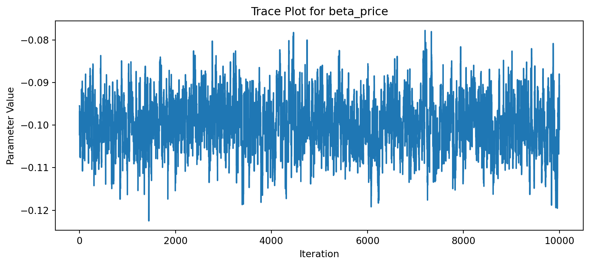

This assignment expores two methods for estimating the MNL model: (1) via Maximum Likelihood, and (2) via a Bayesian approach using a Metropolis-Hastings MCMC algorithm.
1. Likelihood for the Multi-nomial Logit (MNL) Model
Suppose we have \(i=1,\ldots,n\) consumers who each select exactly one product \(j\) from a set of \(J\) products. The outcome variable is the identity of the product chosen \(y_i \in \{1, \ldots, J\}\) or equivalently a vector of \(J-1\) zeros and \(1\) one, where the \(1\) indicates the selected product. For example, if the third product was chosen out of 3 products, then either \(y=3\) or \(y=(0,0,1)\) depending on how we want to represent it. Suppose also that we have a vector of data on each product \(x_j\) (eg, brand, price, etc.).
We model the consumer’s decision as the selection of the product that provides the most utility, and we’ll specify the utility function as a linear function of the product characteristics:
\[ U_{ij} = x_j'\beta + \epsilon_{ij} \]
where \(\epsilon_{ij}\) is an i.i.d. extreme value error term.
The choice of the i.i.d. extreme value error term leads to a closed-form expression for the probability that consumer \(i\) chooses product \(j\):
A clever way to write the individual likelihood function for consumer \(i\) is the product of the \(J\) probabilities, each raised to the power of an indicator variable (\(\delta_{ij}\)) that indicates the chosen product:
We will simulate data from a conjoint experiment about video content streaming services. We elect to simulate 100 respondents, each completing 10 choice tasks, where they choose from three alternatives per task. For simplicity, there is not a “no choice” option; each simulated respondent must select one of the 3 alternatives.
Each alternative is a hypothetical streaming offer consistent of three attributes: (1) brand is either Netflix, Amazon Prime, or Hulu; (2) ads can either be part of the experience, or it can be ad-free, and (3) price per month ranges from $4 to $32 in increments of $4.
The part-worths (ie, preference weights or beta parameters) for the attribute levels will be 1.0 for Netflix, 0.5 for Amazon Prime (with 0 for Hulu as the reference brand); -0.8 for included adverstisements (0 for ad-free); and -0.1*price so that utility to consumer \(i\) for hypothethical streaming service \(j\) is
where the variables are binary indicators and \(\varepsilon\) is Type 1 Extreme Value (ie, Gumble) distributed.
The following code provides the simulation of the conjoint data.
Note
import numpy as npimport pandas as pd# Set seed for reproducibilitynp.random.seed(123)# Define attributesbrands = ['N', 'P', 'H'] # Netflix, Prime, Huluads = ['Yes', 'No']prices = np.arange(8, 33, 4) # 8 to 32 inclusive# Generate all possible profilesimport itertoolsprofiles = pd.DataFrame(list(itertools.product(brands, ads, prices)), columns=['brand', 'ad', 'price'])m = profiles.shape[0]# Define part-worth utilitiesb_util = {'N': 1.0, 'P': 0.5, 'H': 0.0}a_util = {'Yes': -0.8, 'No': 0.0}p_util =lambda p: -0.1* p# Simulation settingsn_peeps =100n_tasks =10n_alts =3# Function to simulate one respondent's datadef sim_one(resp_id): tasks = []for task inrange(1, n_tasks +1): sampled = profiles.sample(n=n_alts, replace=False).copy() sampled['resp'] = resp_id sampled['task'] = task# Compute deterministic utility sampled['v'] = ( sampled['brand'].map(b_util) + sampled['ad'].map(a_util) + p_util(sampled['price']) ).round(10)# Add Gumbel noise (Type I extreme value) sampled['e'] =-np.log(-np.log(np.random.uniform(size=n_alts))) sampled['u'] = sampled['v'] + sampled['e']# Identify chosen alternative sampled['choice'] = (sampled['u'] == sampled['u'].max()).astype(int) tasks.append(sampled[['resp', 'task', 'brand', 'ad', 'price', 'choice']])return pd.concat(tasks, ignore_index=True)# Simulate data for all respondentsconjoint_data = pd.concat([sim_one(i) for i inrange(1, n_peeps +1)], ignore_index=True)# View first few rowsconjoint_data.head()
resp
task
brand
ad
price
choice
0
1
1
P
No
32
0
1
1
1
N
No
28
0
2
1
1
N
No
24
1
3
1
2
H
No
28
0
4
1
2
H
No
8
1
3. Preparing the Data for Estimation
The “hard part” of the MNL likelihood function is organizing the data, as we need to keep track of 3 dimensions (consumer \(i\), covariate \(k\), and product \(j\)) instead of the typical 2 dimensions for cross-sectional regression models (consumer \(i\) and covariate \(k\)). The fact that each task for each respondent has the same number of alternatives (3) helps. In addition, we need to convert the categorical variables for brand and ads into binary variables.
import pandas as pd# Load the conjoint dataconjoint_data = pd.read_csv("conjoint_data.csv")# One-hot encode categorical variables (Hulu and Ad-Free as reference levels)conjoint_prepped = pd.get_dummies(conjoint_data, columns=["brand", "ad"], drop_first=True)# Sort the data to preserve the order by respondent and taskconjoint_prepped = conjoint_prepped.sort_values(by=["resp", "task"]).reset_index(drop=True)# Create the design matrix (X) and the target vector (y)X = conjoint_prepped[["brand_N", "brand_P", "ad_Yes", "price"]]y = conjoint_prepped["choice"]# Optionally combine X and y with respondent/task info for reviewconjoint_ready = pd.concat([conjoint_prepped[["resp", "task"]], X, y], axis=1)# Display first few rowsconjoint_ready.head()
import matplotlib.pyplot as plt# Select parameter index (0: beta_netflix, 1: beta_prime, 2: beta_ads, 3: beta_price)param_index =3param_name ='beta_price'samples = posterior_samples[:, param_index]# Trace plotplt.figure(figsize=(10, 4))plt.plot(samples)plt.title(f"Trace Plot for {param_name}")plt.xlabel("Iteration")plt.ylabel("Parameter Value")plt.show()

# Histogram of posterior samplesplt.figure(figsize=(8, 6))plt.hist(samples, bins=40, edgecolor='black', density=True)plt.title(f"Posterior Distribution for {param_name}")plt.xlabel("Parameter Value")plt.ylabel("Density")plt.show()
If we had not simulated the data and instead estimated the model from real survey responses, we would interpret the parameter estimates as reflecting consumer preferences for different streaming service attributes.
The fact that \(\beta_\text{Netflix} > \beta_\text{Prime}\) implies that, on average, respondents prefer Netflix over Amazon Prime when all other attributes (ads and price) are held constant. This aligns with common perceptions of Netflix as a more dominant or desirable streaming brand.
A negative coefficient for price (\(\beta_\text{price} < 0\)) makes intuitive and economic sense: as price increases, utility (and hence the probability of choosing an option) decreases. This confirms price sensitivity, a key aspect of consumer choice modeling.
The magnitude of \(\beta_\text{ads}\) (likely negative) reflects disutility from included advertisements. A larger negative value would suggest that respondents strongly prefer ad-free experiences.
Overall, the signs and relative sizes of the parameters are consistent with rational consumer behavior. The comparison between the MLE and Bayesian results shows that both approaches yield similar inference, with Bayesian methods also providing full posterior distributions for the parameters.
Additional Discussion: Extending to a Multi-Level Model
To simulate data from — and estimate parameters of — a multi-level (random parameter or hierarchical) MNL model, the key conceptual change is to allow individual-level heterogeneity in preferences.
Simulation Changes:
In the current model, all respondents share the same coefficients (β) for attributes. To simulate data from a hierarchical model, we would: - Draw each respondent’s coefficients from a population distribution.
For example: \[
\beta_i \sim \mathcal{N}(\mu, \Sigma)
\] where \(\mu\) is the average preference vector across all respondents, and \(\Sigma\) is the covariance matrix capturing variability in preferences across individuals. - Then simulate each respondent’s choices using their own\(\beta_i\).
Estimation Changes:
To estimate such a model: - You can no longer rely on a single likelihood function over one shared \(\beta\). - Instead, use Bayesian hierarchical modeling, where: - Each respondent has their own \(\beta_i\). - The \(\beta_i\)’s are modeled as coming from a population-level distribution with unknown hyperparameters \((\mu, \Sigma)\). - Estimation typically requires MCMC sampling methods such as Gibbs sampling or Hamiltonian Monte Carlo (e.g., via PyMC, Stan, or NUTS samplers).
This hierarchical structure allows the model to better fit real-world conjoint data, where preferences vary significantly across individuals.